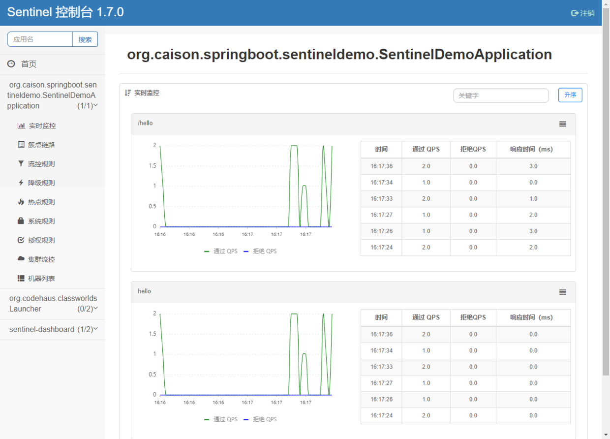

原文连接:https://www.cnblogs.com/caison/p/11673047.html

Sentinel 承接了阿里巴巴近 10 年的双十一大促流量的核心场景
本文介绍阿里开源限流熔断方案Sentinel功能、原理、架构、快速入门以及相关框架比较
基本介绍
1 名词解释
服务限流 ：当系统资源不够，不足以应对大量请求，对系统按照预设的规则进行流量限制或功能限制
服务熔断：当调用目标服务的请求和调用大量超时或失败，服务调用方为避免造成长时间的阻塞造成影响其他服务，后续对该服务接口的调用不再经过进行请求，直接执行本地的默认方法
服务降级：为了保证核心业务在大量请求下能正常运行，根据实际业务情况及流量，对部分服务降低优先级，有策略的不处理或用简单的方式处理
服务降级的实现可以基于人工开关降级（秒杀、电商大促等）和自动检测（超时、失败次数、故障），熔断可以理解为一种服务故障降级处理
2 为什么需要限流降级
系统承载的访问量是有限的，如果不做流量控制，会导致系统资源占满，服务超时，从而所有用户无法使用，通过服务限流控制请求的量，服务降级省掉非核心业务对系统资源的占用，最大化利用系统资源，尽可能服务更多用户
3 Sentinel简介
Sentinel: 分布式系统的流量防卫兵，是阿里中间件团队2018年7月开源的，面向分布式服务架构的轻量级流量控制产品，主要以流量为切入点，从流量控制、熔断降级、系统负载保护等多个维度来保护系统服务的稳定性
Sentinel 的开源生态：
功能特性
1 总体介绍
Sentinel 具有以下特征:
丰富的应用场景：秒杀限流，消息削峰填谷、集群流量控制、实时熔断下游不可用应用等
完备的实时监控：Sentinel 同时提供实时的监控功能。可以在控制台中看到接入应用的单台机器秒级数据，甚至 500 台以下规模的集群的汇总运行情况
广泛的开源生态：Sentinel 提供开箱即用的与其它开源框架/库的整合模块，例如与 Spring Cloud、Dubbo、gRPC 的整合。只需要引入相应的依赖并进行简单的配置即可快速地接入 Sentinel
完善的 SPI 扩展点：Sentinel 提供简单易用、完善的 SPI 扩展接口。可以通过实现扩展接口来快速地定制逻辑。例如定制规则管理、适配动态数据源等
Sentinel 分为两个部分:
控制台（Dashboard） 基于 Spring Boot 开发，打包后可以直接运行，不需要额外的 Tomcat 等应用容器
核心库（Java 客户端） 不依赖任何框架/库，能够运行于所有 Java 运行时环境，同时对 Dubbo / Spring Cloud 等框架也有较好的支持
2 控制台特性

实时监控
支持自动发现集群机器列表、服务健康状态、服务调用通过/拒绝QPS、调用耗时、图表统计规则管理及推送
支持在界面配置流控、降级、热点规则，并实时推送鉴权
控制台支持自定义鉴权接口，提供基本登录功能
3 核心库功能特性
(1) 应用流控
针对指定应用实例的流量控制，监控应用流量QPS或并发线程数，当达到指定的阈值时对流量进行控制，以避免被瞬时的流量高峰冲垮，从而保障应用的高可用性
流量控制的手段包括：
- 直接拒绝
- Warm Up，即预热/冷启动方式，让通过的流量缓慢增加，在一定时间内逐渐增加到阈值上限，给冷系统一个预热的时间，避免冷系统被瞬间压垮
- 匀速排队，严格控制请求通过的间隔时间，让请求以均匀的速度通过
(2) 集群流控
不同于应用流控根据单个应用实例阈值执行限流检查，集群流控只对整个集群调用总量进行限流，例如以下场景：
- 限制某个用户调用某个API的总QPS，提供API的应用在多个机器上部署了多个实例
- 因为多个应用实例流量不均匀，导致集群调用总量没有到的情况下某些机器就开始限流
仅靠单机维度去限制的话会无法精确地限制总体流量，通过集群精确地控制整个集群的调用总量，结合单机限流兜底，可以更好地发挥流量控制的效果
(3) 网关流控
Sentinel 支持对 Spring Cloud Gateway、Zuul 等主流的 API Gateway 进行限流
网关流控针对 API网关的场景定制的限流规则，可以针对不同 route 或自定义的 API 分组进行限流，支持针对请求中的路径、参数、Header、来源 IP 等进行定制化的限流
(4) 熔断降级
如果调用链路中的某个资源不稳定，最终会导致请求发生堆积，通过熔断降级能在调用链路中某个资源出现不稳定状态时（包括调用超时、异常比例升高、异常数升高），对这个资源的调用进行限制，让请求快速失败，避免影响到其它的资源而导致级联错误
当资源被降级后，在接下来的降级时间窗口之内，对该资源的调用都自动熔断（默认行为是抛出 DegradeException），经过时间窗口之后，退出熔断，并在下一次资源出现不稳定状态再次自动熔断
(5) 热点参数限流
热点即经常访问的数据，热点参数限流会统计传入参数中的热点参数，并根据配置的限流阈值与模式，对包含热点参数的资源调用进行限流
例如以下场景：
- 用户ID为参数，限制用户对接口的范围QPS
- 商品ID为参数，限制商品下单接口频率
(6) 系统自适应限流
为了解决传统方案：基于操作系统负载(load1，linux下用uptime查看)做进行自适应限流，带来的存在延时、系统性能恢复慢的问题，Sentinel采用新的思路：根据系统能够处理的请求，和允许进来的请求，来做平衡，而不是根据一个间接的指标（系统 load）来做限流
目标在于：在系统不被拖垮的情况下，尽可能提高系统的吞吐率，而不是 负载 一定要到低于某个阈值
系统保护规则是从应用级别的入口流量进行控制，从单台机器的总体 Load、RT、入口 QPS 和线程数四个维度监控应用数据，当实际运行达到限定阈值进行限流保护，支持的阈值类型：
- Load：当系统 load1 超过阈值，且系统当前的并发线程数超过系统容量时才会触发系统保护。系统容量由系统时间运行监测到的的 maxQps * minRt (最小响应时间)计算得出
- RT：当单台机器上所有入口流量的平均 RT(响应时间)
- 线程数：当单台机器上所有入口流量的并发线程数
- 入口 QPS：当单台机器上所有入口流量的 QPS
(7) 黑白名单控制
Sentinel黑白名单根据资源的请求来源（origin）限制资源是否通过，若配置白名单则只有请求来源位于白名单内时才可通过；若配置黑名单则请求来源位于黑名单时不通过，其余的请求通过
快速入门
1 安装控制台
从github release页面(https://github.com/alibaba/Sentinel/releases)下载最新控制台jar包
命令行启动控制台：
java -Dserver.port=8080 -Dcsp.sentinel.dashboard.server=localhost:8080 -Dproject.name=sentinel-dashboard -jar sentinel-dashboard.jar2 应用接入Sentinel
Sentinel适配了常见主流框架，包括Dubbo、Spring Boot、Spring WebFlux、gRPC、Zuul、Spring Cloud Gateway、RocketMQ、Web Servlet，对于需要限流的资源，支持用原生Java的try-catch 接入或者使用注解
下面以常见的Spring Boot注解的方式作为示例：
引入sentinel适配Spring Cloud的依赖：
<dependency>
<groupId>com.alibaba.cloud</groupId>
<artifactId>spring-cloud-starter-alibaba-sentinel</artifactId>
<version>2.1.0.RELEASE</version>
</dependency>application.yml指定控制台地址：
spring:
cloud:
sentinel:
transport:
dashboard: IP:端口号定义需要限流的资源：
@RestController
public class TestController {
@GetMapping(value = "/hello")
// 定义需要限流的资源名称为hello
@SentinelResource("hello")
public String hello() {
return "Hello Sentinel";
}
}请求一次上面的http hello接口后，触发Sentinel客户端初始化，才能在控制台看到接口
添加流控规则：
频繁请求接口，可以看到部分请求被拒绝：
注意：上面的配置方式是没有做持久化的，生产环境不建议使用
3 规则配置
Sentinel 提供 动态规则数据源 支持来动态地管理、读取配置的规则。Sentinel 提供的 ReadableDataSource 和 WritableDataSource 接口简单易用，非常方便使用。
Sentinel 动态规则源针对常见的配置中心和远程存储进行适配，目前已支持 Nacos、ZooKeeper、Apollo、Redis 等多种动态规则源，可以覆盖到很多的生产场景
实现原理
下面介绍Sentinel客户端基本原理
1 基本概念
Resource 资源
Sentinel中，需要被流量保护的方法、代码块都可以称为资源，每个资源都需要定义一个唯一的资源名词，用于匹配相关规则Entry
Sentinel功能入口类，Entry 可以通过对主流框架的适配自动创建，也可以通过注解的方式或调用 SphU API 显式创建，创建后执行资源和规则匹配和校验Slot
功能插槽，由Enty类创建，每个资源对应一系列Slot，Slot实现资源信息收集、规则匹配、校验的，多个Slot通过组成Slot Chain，在进入资源和退出资源时分别基于责任链模式调用entry()和exit()方法
2 工作原理
一个简单的demo：
String resourceName = "resourceName";
Entry entry = null;
try {
entry = SphU.entry(resourceName);
System.out.println("resource running");
} catch (BlockException e) {
// 限流
throw e;
} catch (Throwable e) {
e.printStackTrace();
throw e;
} finally {
if (entry != null) {
entry.exit();
}
}主要流程如下：
- 进入资源方法之前，基于SphU创建Entry，Entry获取查找资源关联的Slot Chain信息，如果找不到则创建，并基于责任链模式调用Slot的entry()方法
- 资源方法调用
- 资源方法调用完成后，通过Entry触发Slot的exit()逻辑
框架比较
| Sentinel | Hystrix | resilience4j | |
|---|---|---|---|
| 隔离策略 | 信号量隔离（并发线程数限流） | 线程池隔离/信号量隔离 | 信号量隔离 |
| 熔断降级策略 | 基于响应时间、异常比率、异常数 | 基于异常比率 | 基于异常比率、响应时间 |
| 实时统计实现 | 滑动窗口（LeapArray） | 滑动窗口（基于 RxJava） | Ring Bit Buffer |
| 动态规则配置 | 支持多种数据源 | 支持多种数据源 | 有限支持 |
| 扩展性 | 多个扩展点 | 插件的形式 | 接口的形式 |
| 基于注解的支持 | 支持 | 支持 | 支持 |
| 限流 | 基于 QPS，支持基于调用关系的限流 | 有限的支持 | Rate Limiter |
| 流量整形 | 支持预热模式、匀速器模式、预热排队模式 | 不支持 | 简单的 Rate Limiter 模式 |
| 系统自适应保护 | 支持 | 不支持 | 不支持 |
| 控制台 | 提供开箱即用的控制台，可配置规则、查看秒级监控、机器发现等 | 简单的监控查看 | 不提供控制台，可对接其它监控系统 |
值得补充的是：相比Hystrix基于线程池隔离进行限流，这种方案虽然隔离性比较好，但是代价就是线程数目太多，线程上下文切换的 overhead 比较大，特别是对低延时的调用有比较大的影响。
Sentinel 并发线程数限流不负责创建和管理线程池，而是简单统计当前请求上下文的线程数目，如果超出阈值，新的请求会被立即拒绝，效果类似于信号量隔离
参考
《Sentinel官方文档》
https://github.com/alibaba/Sentinel/wiki
《从 Hystrix 迁移到 Sentinel》
https://github.com/alibaba/Sentinel/wiki/Guideline:-从-Hystrix-迁移到-Sentinel